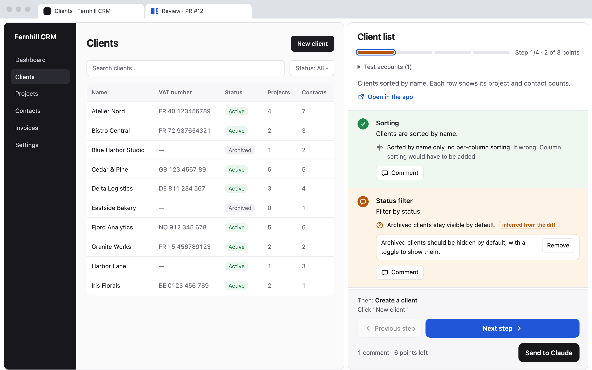
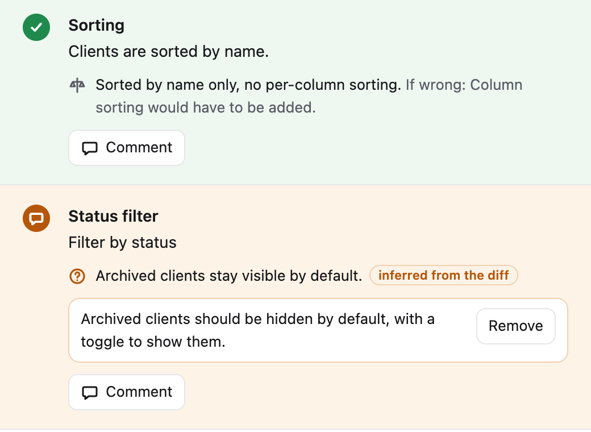

Walk through a pull request in your running app.
Claude lays the PR out as steps beside your app. Check each point, comment, and send it back at once.


One review, start to push
You stay in Claude Code for the talking and in Chrome for the looking.
-
Run
/review-walkthru 123Claude reads the PR, its commits and the conversation that built it. It starts the app, creates the test accounts, and writes the scenario.
-
Walk through
Chrome opens the review page next to the app, in split view. Each step says what to do and which decisions sit behind it.
-
Send
Check a point to validate it or comment on it. One click sends the whole review to Claude Code.
-
Fix and repeat
Claude fixes in the conversation and offers a round with only the steps to recheck. Once a round passes without comments, it pushes, after you say yes.
Built for the reviewer
Decisions next to the screen that shows them
Each point carries the author's decisions and Claude's doubts, with what a change would cost.

The next round skips what you validated
Claude keeps the commented steps and the ones its fixes touch. Each skipped step comes with a reason.
Your machine, your call
A local relay serves the page. Claude writes nothing on GitHub: no PR comment, no description edit. It pushes only when you approve.
Install
Two minutes, once per machine.
1. Add the plugin in Claude Code
/plugin marketplace add Tilotiti/review-walkthru
/plugin install review-walkthru@review-walkthru- macOS or Linux
- Node.js 18 or later
- GitHub CLI signed in, with write access to the repo
2. Add the Chrome extension
It opens your app next to the review page, in split view. It needs Chrome 155 or later.

3. Review a PR
/review-walkthru 123